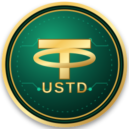

<div class="ustd-card">

  

  <div class="ustd-info">
    <h3>USTD</h3>
    <span>USD Stable Token</span>

    <div class="contract-box">
      <code id="ustdAddress">
        0x4644E1113FE1a6bA831D85cc4772b3D0c23DE655
      </code>

      <button onclick="copyUSTD()" title="Copiar contrato">
        📋
      </button>
    </div>

    <div class="ustd-buttons">

      <button onclick="addUSTD()" class="wallet-btn">
        🦊 Adicionar USTD à carteira
      </button>

      <a
        href="https://etherscan.io/token/0x4644E1113FE1a6bA831D85cc4772b3D0c23DE655"
        target="_blank"
        class="explorer-btn"
      >
        Ver contrato
      </a>

    </div>
  </div>

</div>

<script>
const USTD = {
  address: "0x4644E1113FE1a6bA831D85cc4772b3D0c23DE655",
  symbol: "USTD",
  decimals: 18,

  // Se o contrato estiver na Ethereum Mainnet:
  chainId: "0x1",

  image: window.location.origin + "/ustd-icon.svg"
};

async function copyUSTD() {
  await navigator.clipboard.writeText(USTD.address);

  alert("Contrato USTD copiado!");
}

async function addUSTD() {

  if (!window.ethereum) {
    alert("Instale uma carteira Web3, como MetaMask, para adicionar o USTD.");
    return;
  }

  try {

    const wasAdded = await window.ethereum.request({
      method: "wallet_watchAsset",
      params: {
        type: "ERC20",
        options: {
          address: USTD.address,
          symbol: USTD.symbol,
          decimals: USTD.decimals,
          image: USTD.image
        }
      }
    });

    if (wasAdded) {
      console.log("USTD adicionado à carteira!");
    }

  } catch (error) {
    console.error(error);
    alert("Não foi possível adicionar o USTD.");
  }
}
</script>
